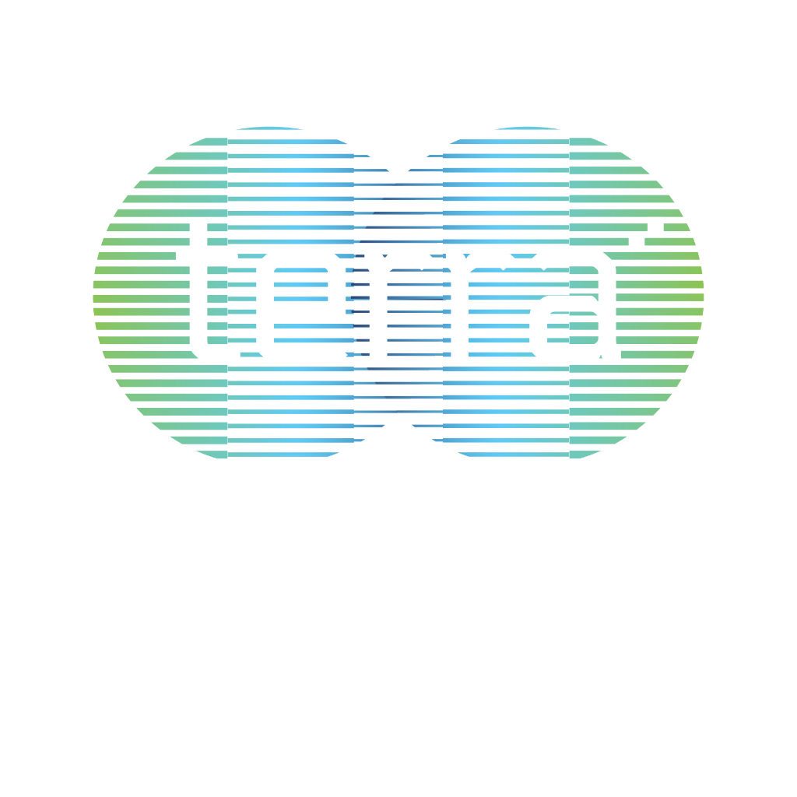

PADDOCK ACADEMY × INTERNATIONAL SPACE UNIVERSITY
Interactive workshops connecting Earth Observation, climate services, and student innovation to real-world industry challenges.
Explore Sessions ↓
Workshops
Space data meets terrestrial impact. Choose your path.
Interact with live Copernicus satellite platforms. Explore how Europe's Sentinel missions monitor water stress, forest health, and coastal erosion across three pilot regions.
ISU students present interactive web dashboards built from satellite data, tackling sustainability challenges from flood crisis mapping to climate monitoring.
Timeline
Food trucks, startup village opens with 30+ exhibitors.
Keynotes from European Space Affairs & industry leaders.
Live Copernicus demos in Salle 1401. Three pilot stations.
Coffee, startup village, and immersive planetarium.
Interactive web dashboards presented in Amphitheatre Galaxy.
Awards, closing remarks, and networking dinner until 23:00.